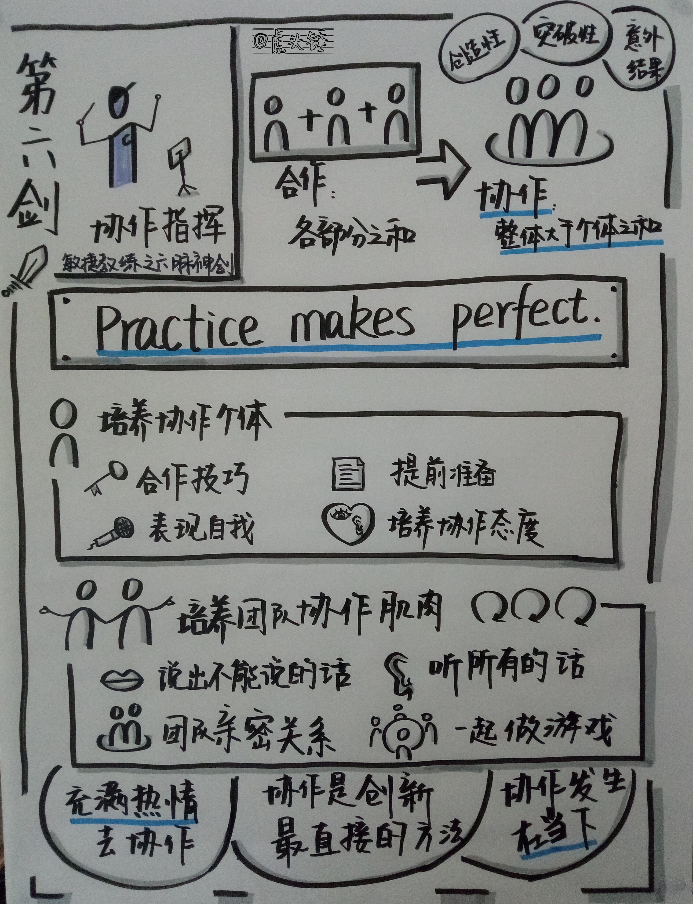

敏捷教练的六脉神剑针对敏捷团队的工作方式提供了六个不同的教练角度，前三剑针对的是更基本的场景，后三剑针对的是更特定的场景。敏捷教练需要对六个角度谙熟于胸，并针对不同的场景混合运用。大多数情况下，场景是可预测的，可以以六脉神剑为基础，制定自己的脚本和台词。在每一次的教练行为中，目的是第一位的，首先是确定目的，然后才是确定方法。除了每一次教练行为的设计，还要对团队完整工作周期的教练计划进行设计。敏捷基础与六脉神剑是设计的基石。

对六脉神剑还可以做另一角度的分类理解，即主动型和应对型。主动型即主动主导的行为，应对型即当一个情况发生时的应对行为。从这个角度看，指导、协助、讲授和协作指挥更多是主动型的行为，问题解决和冲突导航更多是应对型的行为。但主动的行为也可能是由场景触发，而应对的行为也需要有预案和主动探询。主动的行为更多是前馈，应对的行为更多是反馈。主动的行为更多发生在正式的仪式中，应对的行为则更多在日常随机发生。主动和应对都需要计划和练习。
这一章的使用方法跟上一章的使用方法一样，提供的是凝聚了前人智慧的检查列表，可以作为我们大脑的扩展。使用时，首先是事先学习，设想在教练工作中可能遇到的场景，针对每一场景可以有什么样的预案。第二是，在每一活动前，根据这些检查列表，制定自己的剧本或脚本，以便在活动中使用。第三是事后回顾，在每一活动之后，再来阅读这些检查列表，什么事自己做得好，什么事还可以做得更好。经过反复演练这三步使用，把这些方法内化成自己的方法，并能进行扩展和创新。
第四剑：问题解决
敏捷问题解决规则
- 一个问题引起了你的注意，或者你觉察到了一个问题。这个问题可能来自观察，也可能来自团队的反馈。
- 暂停一下，思考该问题，把问题看清楚。问题的真相和本质是什么。
- 团队拥有对问题的最多理解，并且对问题的解决负有责任，教练的责任是协助团队，把团队纳入问题解决和变成问题解决者。
- 允许团队应对解决或者不应对。解决问题以及是否制定计划和采取行动是团队的决定和承诺。
- 传授解决问题的框架，让团队成为解决问题者，是教练的目的。
发现与寻找问题
- 要抵制立即解决问题的诱惑。除非人的基本尊严受到侵犯，对于其他情况，并不需要立即处理。
- 识别是否是真实的问题。不为虚拟的问题进行虚拟的讨论。
- 流程层面的问题：我们在敏捷方面做得如何？可以采用敏捷成熟度或健康度检查列表，推荐 Mike Cohn 的敏捷成熟度模型和 Spotify 的敏捷健康度检查。成熟度或健康检查中，对问题的评估只是个触发，团队的对话才是最有价值的部分。
- 质量和绩效问题：团队如何可以做得更好？通过制定完成的定义，并在每个计划会上完善，在每个评审会上检查，来持续提升质量。
- 团队的动态问题：团队如何可以变成一个更好的团队？
扩展：团队动态问题之艾伦-布劳恩的团队动态调查
- 在团队每天的交互中有多少幽默的成分？
- 在出现困难和高压时，团队最初的行为是什么？
- 团队成员出现抵触情绪有多么频繁？
- 当团队成员有抵触情绪时，他们之间多久会进行一次充分的讨论？
- 基于团队规范，在平常的交互中团队成员做出妥协有多频繁？
- 任何一位团队成员向任何其他一位团队成员能提供什么样的反馈意见？
- 任何一位团队成员向任何其他一位团队成员真正提出了什么样的反馈意见？
- 一位团队成员与另一位团队成员讨论你的绩效和行为，而不是直接向你或者在第三方在场的情况下提供反馈意见，可能性有多大。
- 就个人的职业目标而言，你从团队中得到了多大程度的支持？
- 在处理一个工作问题时，需要承认有问题并需要请求团队成员帮助，这种情况有多少？
- 当你向团队分享个人信息时，你感受到攻击的可能性有多大？
- 当一个问题可能引发团队内部的冲突或争论时，团队有多大可能性把这个问题带到团队中讨论？
- 当一个问题可能有很多个冲突点时，你有多大可能把这个问题带到团队中讨论？
- 如果一个工作项可能引发很多不同的冲突，你把它带到了团队中，并且团队达成了可行的共识，这种可能性有多大？
- 在过去两个工作日中，你能举一个例子说明你在团队中感受到温暖和包容吗？
- 在过去两个工作日中，你能举一个例子说明你在团队中感受到被轻视或排斥吗？
- 团队在多大程度上让你觉得你对自己的工作是负责的？
扩展：团队动态问题之 BART（边界、权力、角色、任务）分析
角色
- 在你的敏捷框架中，所有正式定义的角色都有人员各就其位吗？
- 是否所有正式定义的角色都在角色边界之内运作良好？
- 是否有人承担的正式角色多于一个？
- 如果团队增加了额外的角色，这些角色的描述是否充分和清晰？
任务
- 团队成员对于他们的团队目标是否清晰？
- 是否有为了完成团队目标所需的所有不同任务？
- 人们从先前相似的情况中引入了什么样的历史和过去的经验？
权力
- 对于每一个角色，它的权力是否被清晰地制定，并被所有人理解和支持？
- 团队成员是否在适当地行使权力？
边界
- 人们是否在被赋予的敏捷角色的权力边界内工作？
- 在迭代期间，团队成员如何赋予另一个团队成员获取任务的权力？
- 在团队中各种各样势力的边界的什么？
清楚地看待与思考问题
- 留到第二天解决：让脑子放轻松，看看第二天起床的时候是否已经有了答案，也许一些更深入的事情或者重现敏捷本质的事情会出现。
- 向自己提问：如果在这个世界上我可以做任何事情，这个事情是什么？这里的风险是什么？如果这个情况已经很好地解决了，解决后的情况会是什么样的？
- 与另一位教练结队：从一位旁观者的角度得到建议，或者一些挑战性的问题。
- 直奔源头：复习敏捷宣言及其背后的十二条原则。
解决问题
- 直接解决它：说出你看到的症状，抛出你的假设，询问团队，对于这个问题，他们想要做什么。
- 重申敏捷的含义：例如，对于每个会议的目的和流程，重回 Scrum 指南。
- 揭示体系本身：把团队比作一个生态体系而不是机器，通过观察和探究揭示这个系统本身，并向团队分享。
- 善用回顾：让团队以不同的角度思考他们一起工作得如何。
- 增加一种启示方法：例如，增加一面痛苦墙，让团队把遇到的痛苦记录下来。
第五剑：冲突领航
冲突中敏捷教练的角色
- 敏捷团队要长期在一起，冲突解决尤为重要。
- 教练需要帮助团队排除冲突，提供解决冲突的方法、指南和框架。
- 教练需认真决定是否要、何时及如何介入冲突管理。
冲突的五个级别：
- 第一级，解决问题。人们有不同的意见，也许误解已经出现，目标与价值的冲突也可能存在，并且团队对于这种冲突的氛围感到焦虑。在这一级里，团队关注问题解决，信息分享和协作流畅，语言是开放和基于事实的。
- 第二级，争执。自我保护变得跟解决问题一样重要。团队成员之间产生距离感，壁垒在强化。个人保护胜过协作，语言是戒备的但允许解释。
- 第三级，争辩。在第三级，目标就是赢得胜利。多个问题汇聚成更大的问题，在这个存在误解的环境中出现派系。问题和人成了同义词，人们已经不能只对事不对人。胜利重于解决，语言中包含个人攻击。
- 第四级，圣战。人们相信，唯一的选择就是让对手退出。保护自己的族群成了焦点，语言呈现出意识形态的特征，而不是针对具体的问题和实事。
- 第五级，世界大战。毁灭是这一级的战斗宣言，胜利已经不够了，对手必须输。很少或没有语言交流，唯一的目的是摧毁对方。
确定团队的冲突级别
- 聆听抱怨：带着同情心去聆听，接受抱怨者所说的事情，让抱怨者知道你在关心他，并正在花时间了解冲突的方方面面。
- 感受活力：大家是在充满活力地协作？还是彼此梳理漠视？团队的精气神是积极向上，还是消极冷漠？
- 关注语言：通过大家说什么和如何说，判断团队的冲突级别。
扩展：冲突级别与语言
- 第一级，团队成员开放且建设性地参与冲突。语言例如：我听到你说了，但我认为你忘记了一个事实；我知道你的想法，但我不同意，因为。。。
- 第二级，对话变得偏于自我保护。语言例如：是的，我是弄坏了这个构建，但在我们团队中有比这更严重的问题。
- 第三级，扭曲的语言出现了。例如：他们总是走捷径，他经常控制每一次对话。
- 第四级，变得更加主观。例如：他们永远不会改变，我们是对的。
- 第五级，充满了斗争。例如：要么是我们，要么是你们，我们必须赢。
应对冲突
- 首先，什么也不做。在决定干预之前，花一些时间观察团队的行为，看他们在处理冲突上是否有进步。
- 分析和应对，考虑以下问题：冲突的级别是什么？问题是什么？作为 A 方，我该如何回应？作为 B 方，我该如何回应？有哪些分解冲突的选择？如果有什么我应该做的话，那会是什么？
- 使用架构：使用敏捷的精髓如原则、价值观和角色定义来排除冲突。平衡任务导向和人际关系导向。
- 揭示模型：揭示冲突层次模型，邀请团队加入对话，探讨如何降低冲突级别。
扩展：冲突应对模式
- 第一级，解决问题。协作寻求双赢，了解每位团队成员的想法，达成共识。
- 第二级，争执。允许对方解决问题，任何事情以心理安全为基础。
- 第三级，争辩。关系比问题本身更重要，先接受对方的观点。对于可以分解的问题，进行交涉。收集数据，建立事实。
- 第四级，圣战。再次构建安全框架，居间传递想法，降低冲突级别。
- 第五级，世界大战。做任何必要的事情防止大家受到伤害。
化解团队成员之间的抱怨
- 第一，建议抱怨者跟被抱怨者直接提及顾虑和感受。
- 第二，跟抱怨者一起找被抱怨者交流。
- 第三，征得同意，居间转告抱怨。
- 如果这三招都不灵的话，最后一招是：不再把它作为一个问题。
面对无法解决的冲突
- 敏捷团队是亲密的。增加团队成员之间的良性互动，而不是关注于解开并解决问题。优秀团队中积极交互与消极交互的比例是三比一到五比一。
- 避免误解形成。团队学习聆听和互相关注。
- 确认允诺和共识。确认所有的声音都被听到，并显式确认允诺和共识。
- 利用共享愿景：尽管团队通常是由经理们创建并通告团队的，团队在一起也没什么共同梦想，但团队依然可以围绕产品和项目生成共同愿景。
关于冲突的最后招式
- 了解冲突框架，选择应对方式，处理抱怨和增加团队的积极性，这些技术自身并不能解决冲突。
- 只有这些技能和思维方式在团队的行动中得到体现时，神奇才会发生。
- 保持对话的基础存在，冲突才有被解决的可能。
第六剑：协作指挥

从合作到协作
- 合作的效果是各个部分之和。而协作是整体大于个体之和。
- 对于不需要创造性的活动，可以只合作不协作。
- 协作是以合作为基础，但增加了产生创造性、突破性和意想不到结果的重要元素。
- 在协作中，每个人都会在他人想法的基础上思考，敢于分享和评议，让那些更好的、个人无法独创的想法浮现。
- 在协作之前先形成合作，每个人集中精力演奏好自己的乐器。
- 教练作为协作指挥者，加入沉默的人员一方，消除高声音者的优势，鼓励每个人变得更自信。
- 让团队通过不断练习，达到不需要指挥者的境界。
培养协作个体
- 传授他们合作技巧：建立响应能力，沉默即暗示同意，运用否决权，寻找其它方案，反思有意识意图与无意识意图，带着同情心说出真相。
- 引导他们提前准备：在协作活动时提前做好准备，例如，在每日站会时身心都准时到达。
- 鼓励他们表现自我：培养自我价值，但排除虚荣心。
- 建立协作态度：对自己的生活环境负责，而不是把责任推给他人；不设防，而不是有保留地进行响应；坦然响应，而不是在需要响应时感到威胁；尝试双赢，而不是防御；寻找解决方法，而不是泾渭分明反应强烈；劝说而不是责备；坚定而不是对抗；既考虑长期也考虑短期；对他人观点感兴趣；欢迎反馈；把冲突看成人类环境的天然成分；平静而直接地谈论艰难的问题；为自己的行为后果负责；持续寻求更深层次的理解；传达关切的态度；寻求卓越；聆听。
培养团队的协作肌肉
- 说出不能说的话：敢于暴露弱点，遇到困难时可以求助。
- 建立而不是打压想法：对过失展示容忍，制止运用惩罚，讨论和接纳不同的观点产生合力。
- 听所有的声音：提升安静的成员并抑制占优势的成员。
- 培养协作中的亲密关系：团队成员能够感知其他人对新素材的理解程度，迅速介入澄清，使团队级别的理解更快地达成。
- 一起认真做游戏：例如计划纸牌。
- 不断提醒他们直到会用。
揭示协作的真谛
- 要创新，协作不是唯一的方法，但它是最直接的方法。
- 协作发生在当下，只有当你这样做时，它才存在。
- 要协作，必须了解你和你的协作同伴为汇聚带来了什么。
- 对你的工作充满热情是协作的前提。
- 如果你遇到一个问题，需要别人做出改变，那么你尚未真正了解你的问题。